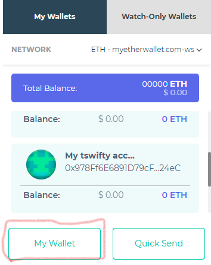
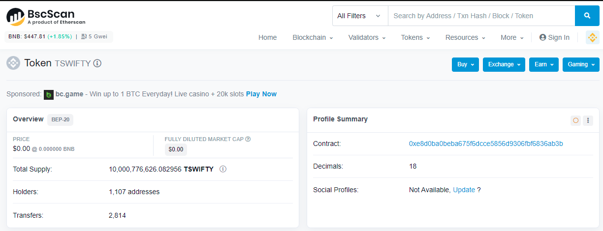

How to Create a Custom Token in MEW Wallet
Introduction
TSWIFTY is a new token that is available on the Binance Smart Chain network
The tswifty token website can be found here:
swiftdemand users have been given the opportunity to swap their swifts for TSWIFTY tokens. Users wishing to take advantage of this needed to register a wallet address with the TSWIFTY bot before 30th March 2022 in order to exchange swifts for TSWIFTY's on a 1:1 trade rate.
An airdrop took place on 1st April 2022. Users that had registered a wallet address could then see their TSWIFTY tokens on bscscan.com
This guide shows:
- How to set up a custom token on MEW Wallet
- How to view TSWIFTY tokens in your wallet
How to Setup a Custom Token in MEW Wallet
There are a few pre-requisits:
- You Must Have the correct contract address for the TSWIFTY token. You should verify the address on the main page of tswiftytoken.com
- The MEW wallet app installed on your mobile.
- The MEW wallet needs to be on the Binance Smart Chain Network (The Binance Smart Chain network is only available on mew wallet for Android, Apple IOS and MEW Web: myetherwallet.com)
- The MEW Wallet browser plugin installed on a desktop device.
- The wallet must be imported from the mobile device to the mew wallet browser plugin
Note: by default MEW wallets are on the Ethereum network.
Step 1:
Check that you can see your TSWIFTY tokens on the Binance smart chain, which you can find here bscscan.com
Paste the wallet address that you sent to the TSWIFTY Bot into the search bar:
You will then see a summary of your wallet:
Scroll down to the bottom of the screen and select BEP-20 Token Txns from the menu. If you can see your TSWIFTY tokens as below, you are go to proceed!
Step 2:
Open the MEW Wallet browser plugin on your desktop device and click the "My Wallet" button:
Step 3:
Click on the 3 dot menu on the wallet you imported from your mobile device and select "Access"
Step 4:
Click "+ Custom Tokens"
Step 5:
Verify that you have the correct contract address that is posted on the main page of tswiftytoken.com
Paste the TSWIFTY contract address into the first box
Type TSWIFTY into the second box
and then type 18 into the third box
and then click save:
You will then see the custom token that you just set up
Note: It will always show an amount of zero here because:
- a: we are not on the Binance Smart Chain network
- b: we can only view and interact with BEP-20 Tokens on MEW Web
Eventually, when everything is sync'd 'TSWIFTY' will be a clickable link that takes you to an Etherscan page. Click on the black circle:
Select the 'BscScan' link:
Click on the token traker in the 'More Info' box
You should now see the BscScan page showing the TSWIFTY Token:
You've confirmed that you have successfully setup the custom token! Now, to view and interact with the new token, we need to go over to MEW Web and the MEW Wallet app' on your mobile device... Read on:
How to View TSWIFTY tokens in your wallet
Step 6:
Open the MEW Wallet app on your mobile device.
Make sure it is connected to the Binance Smart Chain network
Step 7:
ImportantTurn off WiFi on your mobiile so that you are only connected to the mobile network, attempting to connect to MEW Web over WiFi does not work.
Open MEW web on your desktop device from here: Mew Web
Click the 'Access My Wallet' button
Click the 'MEW Wallet' link:
Step 8:
With the MEW Wallet app open on your mobile device and the mobile camera pointing at the QR code, click the camera icon in top right corner of the screen.
After a few seconds, your mobile device should display a 'Connected' screen and a 'Disconnect' button. At the same time, the browser window shuold now show your Wallet connected to MEW Web
Check that it is connected to the Binance Smart Chain:
Scroll down to the bottom of the screen and you should be able to see your tokens.
If the tokens are not showing, the network hasn't quite synchronized with your wallet yet Dont Panic! If that is the case follow the steps below to make sure that you can see your tokens.
Step 9:
If you can't see your token on the main dashboard screen of MEW Web, click the 'Swap' button on the left hand side of the sceen
On the right hand side of the screen, you should a box with 'My Tokens Value' click the '+1' symbol in the circle
A pop-up windo will appear showing your tokens
As long as you can see your tokens, everything is fine and you should be able to see you tokens from the main dashboard screen of MEW Web as soon as the network has sychronized with your wallet.